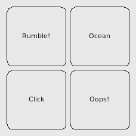

Files:
This example shows how to use simple haptic effects in an application via the QtMobility Feedback API.
It provides an example of how to use the QtMobility libraries to:
Compelling applications attempt to immerse the user in the application experience. There are many elements to an immersive experience, including a consistent and beautiful graphical user interface design, unobtrusive yet informative sound design, and intuitive program flow. Another important aspect of immersive applications is tactile feedback and haptic effects.
The QtMobility Feedback API allows application developers to include tactile feedback into their application via a simple to use and extensible API. Some common uses for tactile feedback are:
This example application provides some short snippets which illustrate how the first two of those use cases may be fulfilled.
The application is designed to work on desktop and mobile platforms with minimal differences in code between the platforms. The interface consists of four buttons arranged into a square, each of which causes a different tactile effect to be played by the default tactile effect provider plugin on the platform.

The example implements two classes:
We will now go through the code for the Dialog class. Here is its definition:
class HapticSquare : public QWidget
{
Q_OBJECT
public:
HapticSquare();
~HapticSquare();
private Q_SLOTS:
void playRumble();
void playOcean();
void playButtonClick();
void playNegativeEffect();
private:
HapticButton *m_btnRumble;
HapticButton *m_btnOcean;
HapticButton *m_btnButtonClick;
HapticButton *m_btnNegativeEffect;
QFeedbackHapticsEffect m_rumble;
QFeedbackHapticsEffect m_ocean;
};
The buttons are connected to the slots, which play the effects. We will now go through the implementation of Dialog.
The constructor starts by setting up the non-repeating haptic effect, which is played by clicking the Rumble! Button.
HapticSquare::HapticSquare()
{
m_rumble.setAttackIntensity(0.1);
m_rumble.setAttackTime(250);
m_rumble.setIntensity(1.0);
m_rumble.setDuration(1000);
m_rumble.setFadeTime(250);
m_rumble.setFadeIntensity(0.1);
Custom haptics effects are created by setting up a QFeedbackHapticsEffect.
A haptics effect provides a fade-in of the effect's intensity(). With vibration, you can think of the intensity as how hard the device will vibrate. The effect will start at attackIntensity() and interpolate to intensity() in attackTime() milliseconds. When the effect ends, we have a similar fade-out, where the haptics effect's intensity will interpolate from intensity() to fadeTime() in fadeTime() milliseconds. The effect will last for a total duration of duration() milliseconds.
We next set up the effect for the Ocean Button.
m_ocean.setAttackIntensity(0.1);
m_ocean.setAttackTime(450);
m_ocean.setIntensity(0.8);
m_ocean.setDuration(6000);
m_ocean.setFadeTime(900);
m_ocean.setFadeIntensity(0.05);
m_ocean.setPeriod(1500);
The m_ocean is a periodic effect, i.e., it repeats after period() milliseconds. Note that the duration() must be greater than the period in order for the periodicity of the effect to be discernable.
We then set up the GUI and connects the buttons to slots that will play the effects.
m_btnRumble = new HapticButton(tr("Rumble!"));
m_btnOcean = new HapticButton(tr("Ocean"));
m_btnButtonClick = new HapticButton(tr("Click"));
m_btnNegativeEffect = new HapticButton(tr("Oops!"));
QGridLayout *topLayout = new QGridLayout(this);
topLayout->addWidget(m_btnRumble, 0, 0);
topLayout->addWidget(m_btnOcean, 0, 1);
topLayout->addWidget(m_btnButtonClick, 1, 0);
topLayout->addWidget(m_btnNegativeEffect, 1, 1);
connect(m_btnRumble, SIGNAL(clicked()), this, SLOT(playRumble()));
connect(m_btnOcean, SIGNAL(clicked()), this, SLOT(playOcean()));
connect(m_btnButtonClick, SIGNAL(clicked()), this, SLOT(playButtonClick()));
connect(m_btnNegativeEffect, SIGNAL(clicked()), this, SLOT(playNegativeEffect()));
}
Let's look at the slots to see how the effects are played.
void HapticSquare::playRumble()
{
m_rumble.start();
}
void HapticSquare::playOcean()
{
if (m_ocean.state() == QFeedbackEffect::Stopped) {
m_ocean.start();
} else {
m_ocean.stop();
}
}
With the m_rumble, we only have to call start(). It will stop when the effect has finished, and can be played again by calling start() again.
The periodic m_ocean effect is started the same way as the m_rumble effect, and may be stopped with the stop() function. It will start playing from the beginning again when start() is called. We could also have paused the effect with pause().
void HapticSquare::playButtonClick()
{
QFeedbackEffect::playThemeEffect(QFeedbackEffect::ThemeBasicButton);
}
void HapticSquare::playNegativeEffect()
{
QFeedbackEffect::playThemeEffect(QFeedbackEffect::ThemeNegativeTacticon);
}
System theme effects are played with the static QFeedbackEffect::playThemeEffect() function. Theme effects cannot be stopped or paused. There is no guarantee that the backend can play the effect; playThemeEffect() will return false if the effect could not be played.
The example is not intended to exercise the entire API. Instead, it is a simple example which illustrates some simple uses of the API. Also, the example will not work correctly on platforms which do not have a QFeedbackHapticInterface (haptic effect provider) plugin loaded. On such platforms, clicking the buttons will have no effect. On Maemo5, periodic effects do not support attack or fade, and so the ocean effect is not smooth.